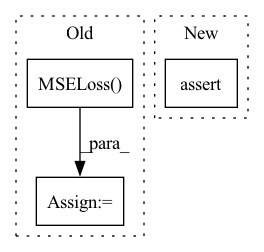

Pattern ID :22958

Before Change
@pytest.mark.parametrize("share_torso", [True, False])
def test_actor_critic_shared_arch(actor_critic_class, share_encoder, share_torso):
input = T.Tensor([1, 1])
loss_fn = T.nn.MSELoss()
actor = Actor(
encoder=IdentityEncoder(),
torso=MLP([2, 2]),
head=DeterministicPolicyHead(input_shape=2, action_shape=1, activation_fn=None),
After Change
assert actor_critic.actor and actor_critic.critic
else:
assert not actor_critic.actor and not actor_critic.critic
In pattern: SUPERPATTERN
Frequency: 4
Non-data size: 3
Instances
Fragment ID: 72957123
Project Name: londonnode/pearl
Commit Name: 154b68d1925a7b73086da8bc3e861d06bf841027
Time: 2021-09-13
Author: rohan.tangri@gmail.com
File Name: tests/test_models.py
M Class Name: AnonimousClass
N Class Name: AnonimousClass
M Method Name: test_actor_critic_shared_arch(3)
N Method Name: test_actor_critic_shared_arch(3)
M Parent Class:
N Parent Class:
M File Name: tests/test_models.py
N File Name: tests/test_models.py
M Start Line: 109
M End Line: 142
N Start Line: 123
N End Line: 127
'>
Before Change
train_dataset = torch.utils.data.TensorDataset(x_seq, target_seq)
train_loader = torch.utils.data.DataLoader(train_dataset, batch_size=batch_size, shuffle=shuffle)
criterion = torch.nn.MSELoss().to(device)
for batch_data in train_loader:
encoder_inputs, labels = batch_data
outputs = model(encoder_inputs, edge_index)
After Change
outputs1 = model(encoder_inputs, edge_index_seq)
outputs2 = model(encoder_inputs, edge_index_seq[0])
assert outputs1.shape == (batch_size, node_count, num_for_predict)
assert outputs2.shape == (batch_size, node_count, num_for_predict)
def test_chebconvatt():
'>
Fragment ID: 72957122
Project Name: benedekrozemberczki/pytorch_geometric_temporal
Commit Name: 8efa512ff3ac06546a082de036a85428720abd7a
Time: 2021-03-20
Author: He_YX@outlook.com
File Name: test/convolutional_test.py
M Class Name: AnonimousClass
N Class Name: AnonimousClass
M Method Name: test_mstgcn(0)
N Method Name: test_mstgcn(0)
M Parent Class:
N Parent Class:
M File Name: test/convolutional_test.py
N File Name: test/convolutional_test.py
M Start Line: 291
M End Line: 328
N Start Line: 293
N End Line: 311
'>
Before Change
train_dataset = torch.utils.data.TensorDataset(x_seq, target_seq)
train_loader = torch.utils.data.DataLoader(train_dataset, batch_size=batch_size, shuffle=shuffle)
criterion = torch.nn.MSELoss().to(device)
for batch_data in train_loader:
encoder_inputs, labels = batch_data
outputs = model(encoder_inputs, edge_index)
After Change
outputs1 = model(encoder_inputs, edge_index_seq)
outputs2 = model(encoder_inputs, edge_index_seq[0])
assert outputs1.shape == (batch_size, node_count, num_for_predict)
assert outputs2.shape == (batch_size, node_count, num_for_predict)
def test_mstgcn():
'>
Fragment ID: 72957124
Project Name: benedekrozemberczki/pytorch_geometric_temporal
Commit Name: 8efa512ff3ac06546a082de036a85428720abd7a
Time: 2021-03-20
Author: He_YX@outlook.com
File Name: test/convolutional_test.py
M Class Name: AnonimousClass
N Class Name: AnonimousClass
M Method Name: test_astgcn(0)
N Method Name: test_astgcn(0)
M Parent Class:
N Parent Class:
M File Name: test/convolutional_test.py
N File Name: test/convolutional_test.py
M Start Line: 248
M End Line: 285
N Start Line: 236
N End Line: 266
'>
Before Change
def __init__(self, epochs, max_val=30.0, mult=-5.0, alpha=0.2, max_batch_num=100, hist_device="cpu"):
super().__init__()
self.loss_sup = nn.CrossEntropyLoss()
self.loss_unsup = nn.MSELoss()
self.max_epochs = epochs
self.max_val = max_val
self.mult = mult
self.alpha = alpha
After Change
self.hist_unsup = []
self.hist_sup = []
self.hist_device = hist_device
assert (self.alpha >= 0) & (self.alpha < 1) // 等于1的时候upata写分母为0
def forward(self, y_pred_sup, y_pred_unsup, y_true_sup, epoch, bti):
if bti < self.max_batch_num:
'>
Fragment ID: 72957126
Project Name: tongjilibo/bert4torch
Commit Name: 60e2e26767bd1fd96cb5b4366f3d8d2db851f43e
Time: 2022-08-04
Author: lb@libos-MacBook-Pro.local
File Name: bert4torch/losses.py
M Class Name: TemporalEnsemblingLoss
N Class Name: TemporalEnsemblingLoss
M Method Name: __init__(7)
N Method Name: __init__(7)
M Parent Class: nn.Module
N Parent Class: nn.Module
M File Name: bert4torch/losses.py
N File Name: bert4torch/losses.py
M Start Line: 232
M End Line: 235
N Start Line: 235
N End Line: 241